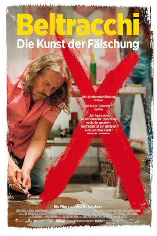

#4220 Beltracchi - Die Kunst der Fälschung
 
 IMDB-Wertung: 7.2 / 10
IMDB-Wertung: 7.2 / 10  Metascore: 0
Metascore: 0 
40 Jahre lang war der Maler Wolfgang Beltracchi als Kunstfälscher tätig. Durch sein künstlerisches Talent, sein Wissen bezüglich der Kunstgeschichte und seine handwerklichen Fertigkeiten füllte er die Lücken, die große Künstler in ihrer Entwicklung aufwiesen, mit eigens geschaffenen Bildern. Seine Frau Helene brachte die Gemälde anschließend aus “verschwundene Originale” auf den Kunstmarkt. Gemeinsam führte das Ehepaar Kunsthändler, Sammler, Galeristen und Experten auf der ganzen Welt hinters Licht. Erst das für 2,8 Millionen Euro verkaufte “Rote Bild mit Pferden” im Stil von Heinrich Campendonk, ließ die Fälschungen auffliegen und sorgte für einen Skandal.
Jahr: 2014
Dauer: 98 Minuten
FSK: 0
Land: Deutschland Studio: Senator FilmTonspuren:
Untertitel:
Auflösung: 1080p (1920x1040) Größe: 6533 MB
Genre: Krimi, Dokumentation, Biographie
Regisseur: Arne Birkenstock
Drehbuch: Noah Oppenheim
Soundtrack:
Darsteller:
- Wolfgang Beltracchi als Himself
- Helene Beltracchi als Herself
- Henrik Hanstein als Himself
- James Roundell als Himself
- Monsieur Ommeslaghe als Himself
- Madame Ommeslaghe als Herself
- Sofia Komarova als Herself
- Niklas Maak als Himself
- René Allonge als Himself
- Henry Keazor als Himself
Datei: X:\Dokumentationen\Biografie\Beltracchi - Die Kunst der Fälschung (2014, FSK0, 1920x1040).mkv seit 26.08.2016
Festplatte: HD Serien(SU-Z)+Dokus+Musik
 Es gibt insgesamt 21 Filme in der Gruppe 'Dokumentationen\Biografie'
Es gibt insgesamt 21 Filme in der Gruppe 'Dokumentationen\Biografie'